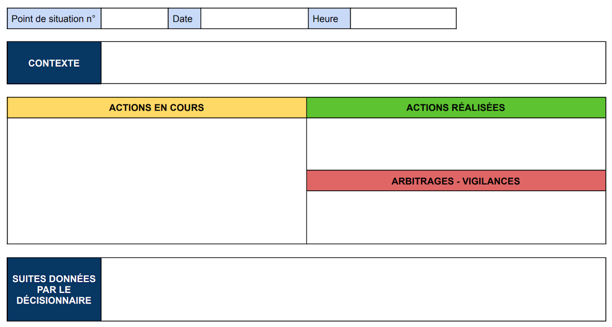

Le point de situation est indispensable pour que chacun comprenne l'état d'avancement des mesures
déployées individuellement dans le cadre de l'ouverture d'une cellule de gestion de crise.
L'objectif d'un point de situation est d'amener le collectif à une conscience partagée des actions
enclenchées. Faire un point de situation revient à construire une représentation de la crise.
Le point de situation permet également de conforter le décideur dans ses options stratégiques retenues, ou
de modifier l'orientation de ces dernières.
| MISE EN OEUVRE
La fréquence des points de situation est fixée par le coordinateur de la cellule de crise. C'est
également
ce dernier qui les animera.
Quelques exemples de moments opportuns pour réaliser un point de situation :
A l'activation de la cellule de crise, lorsque tous les membres sont
réunis, pour conforter le
"point zéro"
et établir les règles de fonctionnement au sein de la cellule.
Lors de la rotation des membres en cellule de crise, en plus de la
passation des consignes.
Sur commande pour préparer les points de situation demandés par les autorités ou par le
décisionnaire.
Il existe différentes méthodologies pour faire un point de situation :
Proposition n°1 :
Répondre aux questions :
"D'où je viens ?" : quelles sont les actions qui ont été réalisées
depuis le
début de la crise.
"Où j'en suis ?" : quelles sont les actions en cours et les nouveaux
éléments à disposition.
"Où je vais ?" : quelles sont les actions proposées au vue de l'évolution du contexte et pour
répondre aux
objectifs fixés par le décideur.
Proposition n°2 :
Assurer une trace écrite des points de situation. Il est possible d'établir un modèle prédéfini, qu'il
vous
suffira de compléter. Vous pouvez vous référer à l'exemple ci-dessous :

Point de situation n° : notez le numéro du point de
situation, car vous
serez amener à en faire plusieurs dans la journée (au minimum trois).
Date et Heure : quand a eu lieu le point de situation ?
Contexte : rappel du contexte de l'événement en deux ou trois lignes (son
périmètre, sa
typologie, ses impacts, etc.).
Actions en cours : quelles actions sont encore en cours ou à faire.
Actions réalisées : quelles actions ont été accomplies.
Arbitrages - vigilances : quels risques identifiés / anticipés au vue des
nouveaux éléments portés à notre connaissance.
Suites données par le décisionnaire : reporter dans cette case les décisions
prises par le décisionnaire à la fin du point de situation (seule case à ne pas remplir en amont
du point).